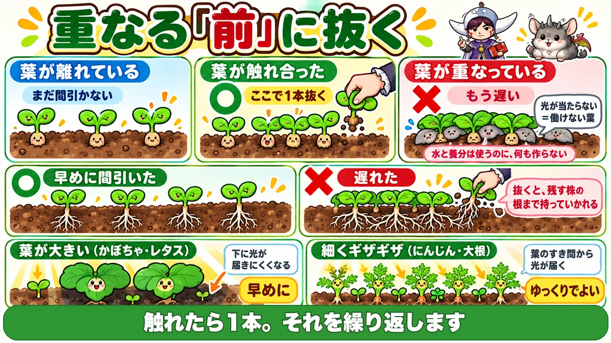
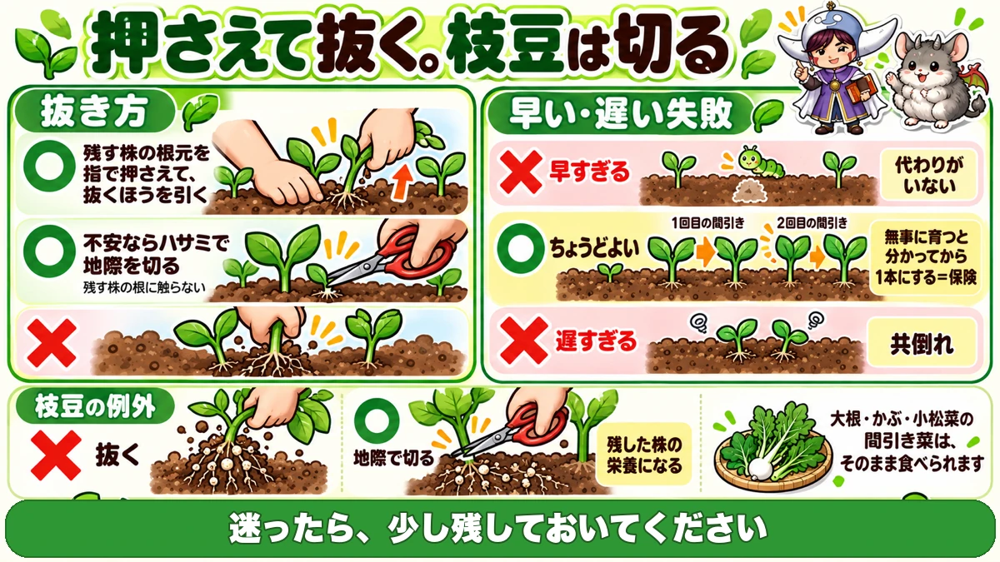
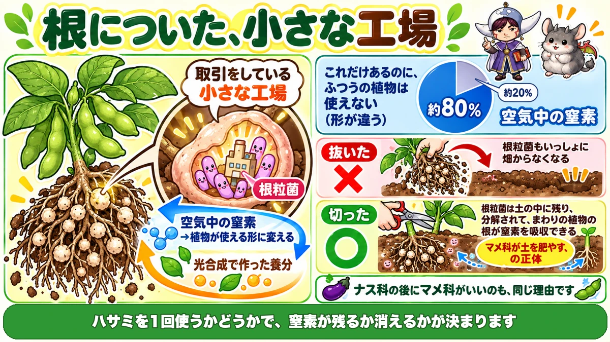

Thin when the leaves touch 🌱 Once they overlap, you're already late

🌱 "It feels wasteful. I can never bring myself to pull them."
🌱 "By the time I got to it the roots had knitted together and wouldn't come out."
🌱 "I did thin them, and the ones I left still didn't grow."
Hello, I'm Eiko. Eight years of growing vegetables, organically and without pesticides, and a teaching licence in science.
Today: thinning. I've written "thin them" in a dozen articles without ever setting out what that actually means. So here it is in one place.
I think thinning is the hardest job in the garden emotionally. You're pulling up seedlings you were pleased to see come up.
The single most important line first:
The signal is the moment the leaves touch.
Not when they overlap. By then you're already late 🌱
Why thin at all?
Two reasons
- Above ground, they compete for light
- Below ground, they compete for water and nutrients
What happens above ground
When leaves overlap, the leaf underneath gets no light. A leaf in shade can't photosynthesise.
A leaf that can't work is a loss
Here's the part worth holding on to.
A leaf that can't work still spends water and nutrients.
So it produces nothing and consumes anyway. For the plant as a whole, that leaf is running at a loss.
What happens below ground
The same competition, for water and fertiliser in the same patch of soil. Worse, once the roots knit together, pulling one seedling later takes the roots of the one you wanted to keep along with it.
The signal: when the leaves touch

What this diagram says （図解の文字）
- Title: "Pull one BEFORE they overlap."
- Leaves apart — "not yet" ／ Leaves touching — ○ "pull one here" ／ Leaves overlapping — ✗ "too late"
- "No light = a leaf that can't work. It uses water and nutrients and makes nothing."
- ○ "thinned early" ／ ✗ "left too long — pulling it takes the roots of the plant you're keeping"
- Big leaves (squash, lettuce): "they shade what's under them — thin early"
- Fine, feathery leaves (carrot, daikon): "light gets through the gaps — you can take your time"
- Bottom line: "Touching means one comes out. Repeat."
Before they overlap
There is only one thing to remember: when leaf touches leaf, pull one. Not at overlap. At contact.
And repeat
- Leaves touch → pull one
- They grow, they touch again → pull another
- Eventually you're down to the final spacing for that crop
Reducing gradually is the whole method.
Leaf shape changes how urgent it is
This is a useful thing to know.
- Large-leaved crops (squash, lettuce) — they shade the ground immediately. Thin early.
- Fine, divided leaves (carrot, daikon) — light still reaches through. You can be slower.
When people say carrot thinning "can wait", that's why. It's the leaf shape, not the plant being forgiving.
How many times, roughly
- Sweetcorn — down to 2 at 4–5 true leaves, then to 1 later (two passes)
- Edamame — down to 2 at about 3 true leaves
Two ways to get it wrong
① Too late
The commonest failure by far. You think "just a bit bigger first", and then neither plant grows. They share the light and the feed and both stay small. And the roots knit, so when you finally pull one you damage the other.
② Too early
This surprises people, but thinning too early is also a failure. Go down to a single seedling while it's still frail, and if that one gets sick, that station is finished. Something eats it — there's no replacement.
So the spares are insurance
Leaving extras for a while is exactly that: insurance. The rule is "go down to one once you know it's going to make it" — which is why you thin in two passes rather than one.
Which mistake is worse?
Honestly: too early is the one you can't undo.
- Too late — the plants are small, but you still harvest something
- Too early and it dies — you harvest nothing
When in doubt, leave a few extra.
How to pull — and the one exception

What this diagram says （図解の文字）
- Title: "Hold it down and pull. Edamame gets cut."
- ○ "press the base of the plant you're keeping with a finger, then pull the other one"
- ○ "if you're nervous, cut at ground level with scissors — never touch the roots you're keeping"
- ✗ Too early: "no replacement" ／ ○ Just right: first pass → second pass, "go to one once you know it's safe = insurance" ／ ✗ Too late: "both fail"
- The edamame exception: ✗ "pull" ／ ○ "cut at ground level — it feeds the plant you kept"
- "Thinnings of daikon, turnip and komatsuna are good to eat as they are."
- "When in doubt, leave a few."
The basic method: hold, then pull
Press down the base of the plant you're keeping with a finger, then pull the other one. Without that finger, both lift.
If you're nervous, cut instead
If it feels like the neighbour is going to move, don't force it. Cut at ground level with scissors. That way you never touch the roots you're keeping. If you're new to this, I'd just do it this way.
Edamame must always be cut
This is the most useful thing on the page.
Edamame — and legumes generally — should be cut, never pulled.
The reason is in the science section at the end, but here's the conclusion first:
- Cut it, and it feeds the plant you kept
- Pull it, and you carry that away with you
Eat the thinnings
Don't bin them. Thinnings of daikon, turnip and komatsuna are good to eat exactly as they are — tender, and stronger in flavour than the mature plant. Into a soup is enough.
The answer to "it feels wasteful" is to eat them.
Leafy greens work the other way round
Not "pull the weak one"
Everything above has been "pull the weak one, keep the strong one". For leafy crops like lettuce and komatsuna, invert it.
Harvest the biggest
Take the plants that have reached eating size. Leave the small ones.
Why the reversal?
Because with leafy crops, the leaves are the harvest. Pull a big one and it's dinner — and the space it leaves goes to the plants around it. Next time you come out, the small ones have taken it.
It suits a home garden
This changed how I grow greens. You can't eat a whole bed at once anyway. Take what you need, biggest first, and harvesting and thinning become the same job.
🔬 The science: there is a factory on a bean's roots

What this diagram says （図解の文字）
- Title: "A tiny factory on the roots."
- Root nodule bacteria take nitrogen from the air → convert it into a form the plant can use. In return the plant hands over sugars from photosynthesis. "A trade."
- Air composition: about 80 % nitrogen, about 20 % oxygen — "all that, and ordinary plants still can't use it (wrong form)."
- ✗ Pulled: "the nodule bacteria leave the garden with it"
- ○ Cut: "the bacteria stay in the soil, break down, and the roots around them can take up that nitrogen"
- "This is what 'legumes improve the soil' actually means."
- "One use of the scissors decides whether that nitrogen stays or goes."
Look at the roots
Pull up one edamame plant and look. There are small pale lumps all over the roots. Those are root nodules.
There are bacteria living inside
Each nodule houses rhizobia — nitrogen-fixing bacteria. And what they do is remarkable: they take nitrogen straight out of the air and convert it into a form the plant can use.
The air is about 80 % nitrogen
This is the part I like. Roughly 80 % of the air is nitrogen. Nitrogen is also the first of the three major plant nutrients. It is everywhere — and ordinary plants cannot touch it, because it's in the wrong chemical form.
The bacteria do the conversion
- The bacteria capture atmospheric nitrogen and convert it into a usable form
- In exchange, the plant hands over sugars it made by photosynthesis
A nodule is a small factory running that trade.
Which is why you cut, not pull
Back to thinning. Pull an edamame seedling and you remove the nodules from the garden. Cut it at ground level and the roots and nodules stay in the soil, break down, and that nitrogen becomes available to the plant you kept.
This is what "legumes feed the soil" means
You'll have heard that legumes improve soil. That's the mechanism. It's also why legumes are a good crop to follow nightshades in a rotation.
One use of the scissors decides whether that nitrogen stays in your garden or leaves in your hand. Worth knowing ☺️
To sum up
- ✅ You thin because of competition for light above and water and feed below
- ✅ A shaded leaf consumes and produces nothing
- ✅ The signal is leaves touching — overlapping is already late
- ✅ Touch → pull one, and repeat
- ✅ Big leaves early, fine leaves slower
- ✅ Sweetcorn: to 2 at 4–5 leaves, then to 1. Edamame: to 2 at ~3 leaves
- ✅ Too late = both fail. Too early = no replacement. When in doubt, leave extras
- ✅ Hold the keeper down and pull — or just cut at ground level
- ✅ Always cut edamame, to leave the nodules in the soil
- ✅ Eat the thinnings
- ✅ Leafy greens invert it: harvest the biggest, leave the small
You don't have to do all of it. Next time you're out, just look for somewhere the leaves are already touching. It's usually one step past the right moment 🌱
Thank you for reading!